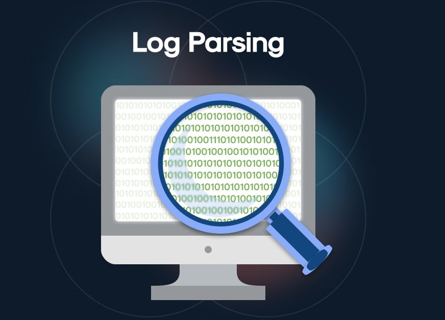

Featured Technical Projects
Below are selected projects showcasing hands-on experience in network architecture, vulnerability assessment, and security automation.
01. Enterprise Network Architecture & Security Hardening
A comprehensive simulation focused on designing and securing an enterprise network infrastructure from the ground up. The project involved constructing a multi-department architecture that enforces strict data isolation, traffic segregation and centralized identity access management to minimize an organization's internal attack surface.

02. Automated Web Log Parser & Threat Detection Script
A programming-focused security project designed to tackle the problem of "log fatigue." When systems generate millions of rows of data, human analysts cannot review them manually. This lightweight Python engine parses raw web server logs in real time, filtering out normal traffic to isolate and flag active cyber attacks.
03. Vulnerability Assessment & Remediation Lab
An offensive-to-defensive project executed inside a secure, sandboxed virtual environment. The objective was to act as an ethical hacker to perform a thorough vulnerability scan against a legacy staging machine, identify critical security loopholes, document the risks, and systematically patch them.
Video : Network Security & Identity Management
A brief video showing network mapping using Nmap to find open ports and running services, followed by executing a credentialed enterprise scan using Nessus.